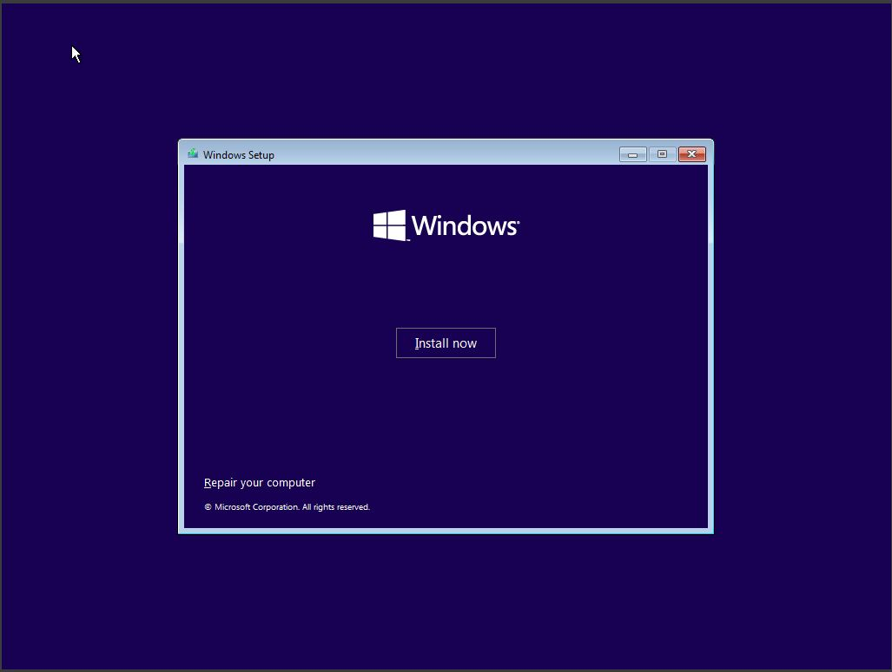

Client Window (10)
Vous devez choisir votre nom de machine
Vous devez choisir votre mémoire vive (RAM) et votre processeur.

Vous devez choisir votre espace de disque dur alloué.
Vous pouvez choisir "finish".
Vous pouvez choisir votre ISO de Windows 10.
Vous pouvez choisir la langue.

Vous pouvez choisir "installer maintenant".
Vous pouvez choisir "je n'ai pas de clé de produit" ou mettre une clef obtenu sur microsoft azure.
Vous pouvez lire et cliquer sur "next".
Vous pouvez choisir "personnalisé".
Vous pouvez choisir votre disque et faire :"suivant".
Vous pouvez attendre que l'installation se termine.
Vous pouvez choisir la langue.
Vous pouvez choisir la langue du clavier.
Vous pouvez choisir "utiliser un compte local" ou vous connecter avec un compte microsoft.
Vous pouvez choisir votre mot de passe.
Et voilà vous avez fini l'installation de votre client windows 10.